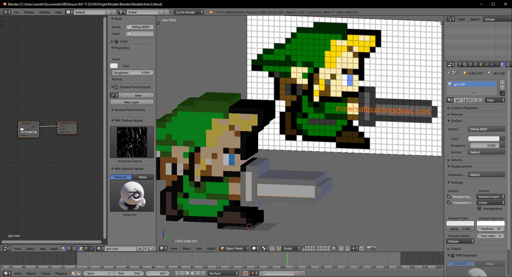

INTRODUCTION ... //
Dans le cadre de l’UE de Synthèse d’Image Avancée, il nous a été demandé de réaliser un projet qui consiste à reproduire le très célèbre Space Invaders sous forme de jeu tournant sur navigateur web en utilisant la bibliotheque Javascript Three.JS.
Il s’agit d’un jeu vidéo Japonais sorti en 1978 de type Shoot them up. Le but est de contrôler un vaisseau et de détruire les vagues croissantes d’ennemis qui avancent de plus en plus vite vers nous.
Nous devions reproduire un remake de ce jeu vidéo en reprenant les bases de cette version et en ajoutant certaines features.
Le jeu est accessible en cliquant ici.
GRAPHISME ... //
Le choix des graphismes étant libre, nous nous sommes très vite tournés vers l’univers d’un autre célèbre jeu vidéo japonais. Nous avons essayés de mélanger les deux genres et de produire une sorte de crossover entre Space Invaders et Zelda.
Dans l’optique de rester dans cet univers rétro, le choix des modèles 3D se devait de l’être également. Tous les modèles ont été modélisés par nous-même en 3D avec le logiciel Blender.
Chaque modèle a été modélisé par la concaténation et duplication de simples cubes en suivant un patron de pixel en 2D. Le résultat 2D/3D est voulu pour rester dans l’esprit jeux 8 bits. Les materials ne sont que de simples couleurs basiques appliquées à des groupes de cubes.
MODELE 3D ... //
- Le modèle Link, qui est issue de Zelda A link to the Past, représente le joueur. Son orientation de base et la direction de son épée étant orienté dans la bonne direction, une légère inclinaison permet de rendre Link visible par la caméra et qu'il ne soit pas plat à l’horizontal.
- Les ennemis sont représentés par de vils Rubis, toujours issus de l’univers de Zelda. Les 3 types d’ennemis originaux ont été représentés par les 3 différentes couleurs de rubis existantes dans le jeu. Chaque rubis/ennemi se diffère par une couleur (Vert/Bleu/Rouge). Nous avons essayé de faire la relation entre les différents points des ennemis (10, 20 et 40) avec la valeur monétaire de ces 3 couleurs de rubis.(vert 1 rubis, bleu 20 et rouge 40).
- Les boucliers sont représentés par des triangles jaunes, symboles du jeu Zelda appelés Triforces.
-
Les projectiles sont pour les ennemis et le joueur représentés par une épée qui est bien évidemment l’épée tirée du jeu. Il s’agit du même modèle d’épée que celle de notre modèle Link.
SKYBOX ... //
Le jeu se situe sur un simple plateau quadrillé flottant dans l’espace.
Dans un premier temps, nous avons essayé d’implémenter une skybox avec ce soleil dynamique en utilisant cette bibliothèque mais il en a résulté par une chute drastique des FPS: environs 10fps. Nous avons donc décidé d’abandonner cette idée et de partir sur quelque chose de plus réaliste.
Finalement l’espace a été modélisé en utilisant une Skybox sphérique dont les normales sont tournées vers l'intérieur et en utilisant une image à haute résolution.
De plus, nous avons généré dynamiquement des particules représentant des étoiles à l’aide de ce tutoriel. Elles s’animent dans un mouvement de rotation pour donner un côté plus dynamique au jeu. Nous avons bien sûr réduit le nombre de particules pour limiter la redondance avec la skybox.
ARCHITECTURE ... //
Organisation ...
Dans un premier temps, n’étant pas encore familier avec la bibliothèque Three.js, nous avons écris le code de manière impérative. Cependant, il est devenu au fil du temps plus compliqué de s’y retrouver, et l’idée d'organiser ce projet en utilisant l’Orienté Objet et des Prototypes est devenu inéluctable.
Toutefois, la notion de prototype étant particulièrement difficile à appréhender, plusieurs blogs et tutoriels (ici et là) ont été utiles à la compréhension de cette notion.
Les prototypes nous ont amenés à penser différemment. Cela nous a conduit à séparer les différents prototypes remplissant un ensemble de fonctions communnes dans plusieurs fichiers Javascript (un prototype par fichier).
- Le fichier index.js est le point d'entrée du programme. Il instancie un objet de type main et invoque sa méthode animate(), ce qui a pour but de lancer l’animation générale du jeu.
- Le fichier main.js est la classe principale contenant le moteur du programme. Tous les prototypes y sont instanciés.. Il contient entre autres les fonctions init() et animate() qui permettent d’instancier et d’animer le jeu.
- Le fichier chargementModele.js est également un des fichiers importants car il permet de manière générale et dynamique, en récupérant en paramètre des données spécifiques telles que les hitbox, le chemin du fichier du modèle 3D, de pouvoir charger le modèle et de le paramétrer (position, rotation..).
This et héritage ...
Il est important de comprendre l’utilité des prototypes. En effet, toutes les classes sont reliées les unes aux autres d’une certaine manière par les heritages et chaine de prototypage (Object.Create).
La classe main.js par exemple, qui est la classe centrale, surcharge la classe parente qui est THREE.Scene. Cela signifie qu’un objet main hérite de toutes les propriétés de THREE.Scene et ainsi l'écriture this de l’objet main équivaut au this de THREE.Scene.C'est très pratique car ce this.main sera utilisé par tous les autres prototypes pour être ajouté et regroupé à la scène. Ainsi le code est plus clair.
La classe ChargementModele ...
Cette classe est connectée à plusieurs autres classes. Elle a pour but d’instancier, charger le modèle de toutes les entités (joueur, ennemis, boucliers et projectiles).
Toutes les classes entités qui l’utilisent surchargent
leur classe par cette classe ChargementModele. Ainsi cette dernière est intégrée à toutes les classes entités appelées.
GESTION DES EVENEMENTS ... //
Les Hitbox ...
L’un des plus gros problèmes rencontrés dans le développement de cette application a été le problème des hitbox.
En effet, aucun moyen n’a été trouvé pour le faire proprement. La solution qui a été mise en place se trouve dans
le fichier ChargementModele.js.
Après avoir chargé un modèle, un cube blanc visible a été créé et ainsi par des translations/agrandissements, nous avons ajustés à la volée et visuellement le cube pour qu’il englobe parfaitement le modèle. C’est approximatif mais il semble que ce soit une solution qui fonctionne.
Les Collisions ...
Les collisions entre les projectiles et les différentes entités (joueur, ennemis et boucliers) sont gérés par une unique méthode dans la classe Projectile. Les collisions sont gérées par un Raycaster de la manière suivante:
- Joueur et ennemis détectent les collisions et cela induit la perte d'un point de vie par le joueur et la destruction de l'ennemi (suppression visuelle de la scène). Chaque tireur est chargé de détruire également son projectile de la scène.
- Le fichier main.js est la classe principale contenant le moteur du programme. Tous les prototypes y sont instanciés.. Il contient entre autres les fonctions init() et animate() qui permettent d’instancier et d’animer le jeu.
-
Concernant les boucliers, une tentative d’implémenter la destruction partielle d’un bouclier en cas de collision par un projectile joueur ou ennemi a été effectué. En effet, le bouclier étant un modèle 3D à
part entière, il n’est pas évident de détruire une partie visuellement parlant.
La solution de charger un deuxième modèle de bouclier "cassé" au même endroit que le premier modèle de bouclier “entier”, invisible, et de rendre invisible le bouclier “entier” et visible le bouclier “cassé” après un certain nombre de collisions détectées, aurait été une solution. Par manque de temps, cette solution n’a pu être implémenter. Il s’agit d’une piste d’amélioration.
Intelligence artificielle et dynamisme ...
Intelligence artificielle
Les ennemis sont dotés d’une sorte d'intelligence artificielle. Il existe une fonction dans la classe ligneEnnemi qui sélectionne l’ennemi le plus proche du joueur pour tirer. De plus, la cadence des tirs augmente proportionnellement et dynamiquement avec les niveaux.
Dynamisme
La classe horde représente l’ensemble des ennemis.
Parmis cette horde, la classe LigneEnnemi représente les lignes d’ennemis. Cela permet de gérer indépendamment le dynamisme
de chaque ligne. La composition des lignes est variée et générée dynamiquement, ainsi que leur vitesse de déplacement. Cela donne une indépendance de gestion des différentes lignes, et les ennemis semblent donc dynamiques.
La touche de triche K a été implémentée et permet de le remarquer rapidement.
AUDIO, CAMERAS ET DIALOGUES
Audio
Tous les sons et musiques de notre jeu proviennent du premier jeu vidéo The Legend of Zelda sortie en 1986 et sont des sons 8 bits. Cela accentue encore plus le thème Zelda et le côté retro de Space invader avec des sons d'époque.
On notera qu'un son est émis pour chaque événement (début de partie, transitions, game over) et pour toutes les collisions (ennemis, joueur et boucliers).
Interactions avec l’utilisateur
Boites de dialogues
La classe
De plus, un
message est affiché à chaque événement important de la partie pour en informer le joueur.
La touche H a été implémentée et permet d’afficher une boîte de dialogue informant sur les touches pour tirer, déplacer le joueur ainsi que les différentes touches pour les caméras.
Textes HTML
Le choix de ne pas utiliser la classe
Par ailleurs, ce choix est justifié pour des raisons esthétiques. Nous avons optés pour l’ajout de simple texte HTML via le DOM par simplicité et surtout par soucis d’apparences.
En effet, plusieurs polices d’écritures issues de Zelda accentuent encore plus l’univers et le thème de ce jeu.
L’affichage en plein écran et le redimensionnement correct de la fenêtre est possible en pressant la touche F
Les Caméras
Plusieurs vues de caméras sont disponibles et on peut y accéder en pressant les touches suivantes:
- Touche 0: caméra par défaut
- Touche 1: caméra joueur en vue première personne
Une transition visuelle est effectuée lorsque l’on presse les différentes touches de caméra grâce à Tween.Js. Cela ajoute un côté agréable et dynamique.
Cependant, nous avions certains bugs lorsque nous passions de la caméra latéral à la caméra joueur. A la fin de la transition, la caméra ne "regardait" pas dans la bonne direction.
Nous avons solutionné ce problème en faisant une première transition par la caméra par défaut, puis en faisant une deuxième transition vers la caméra joueur.
La gestion de la caméra n'a pas été evidente car nous position???????????????????????????????????????????????????????????????????
BIBLIOTHEQUES UTILISEES
Keydrown.js
Cette API permet de gérer les évènements claviers. Ce choix est motivé par le fait que contrairement aux events, cette API gère les events KeyUp et KeyDown.
Howler.js
Cette API est dédiée à la gestion de la musique et des sons audios. Des méthodes permettent de faire des effets intéressants comme le fade in et fade out et ainsi permettent des transitions douces entre les musiques.
Tween.js
L'unique API JavaScript permet de gérer les effets de Tweening. Les Tweens permettent de faire des animations et transitions variant selon des courbes. Elle est utilisé dans notre cas pour les transitions caméra entre les différentes vues.
Threex.js
Cette riche API, basée sur Three.js, est dédiée au jeu vidéo. Dans notre cas, nous avons simplement utilisé les fonctions THREEx.Fullscreen, THREEx.WindowResize et THREEx.screenshot permettant respectivement l’affichage en plein écran, d’adapter dynamiquement la taille de la fenêtre et la capture d’écran.
FEATURES IMPLEMENTES
| Features demandés | Implémentation |
|---|---|
| Ecran d’accueil comme demandé | |
| Ecran Game Over | |
| Utilisation de Three.JS + diverses bibliothèques | |
| Adaptation dynamique de la fenêtre | |
| Passage en plein écran (touche F) | |
| Capture d’écran (touche S) | |
| Gestion des ressources avec Parcel | |
| Les entités en 3D + matériaux | |
| Décors 3D | |
| Effet de Post-Processing | |
| Dialogues avec l’utilisateur | |
| Affichage de l’aide (touche (touche H)) | |
| 3 différentes vues (touche 0 et 1) | |
| Dégâts visuels lors des collisions | |
| Gestion des collisions | |
| Projectiles disparaissent lors des collisions | |
| Dynamisme | |
| Présence IA + dextérité croissante avec les niveaux | |
| Effets sonores + musiques désactivables (touche M) | |
| Mode invincible (touche I) | |
| Kill les tous (touche K) |